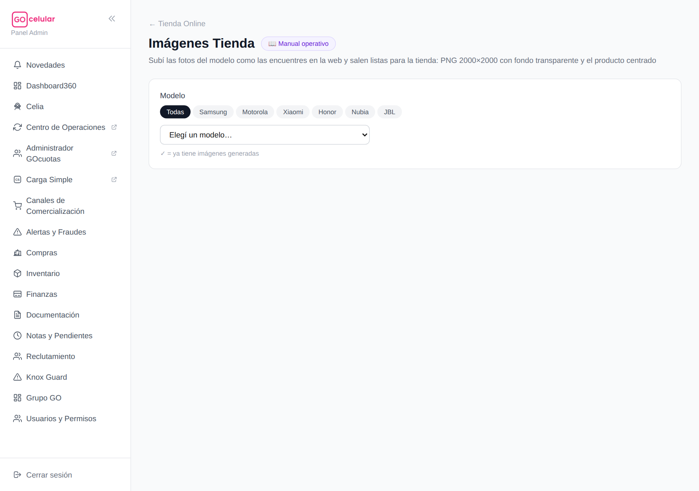
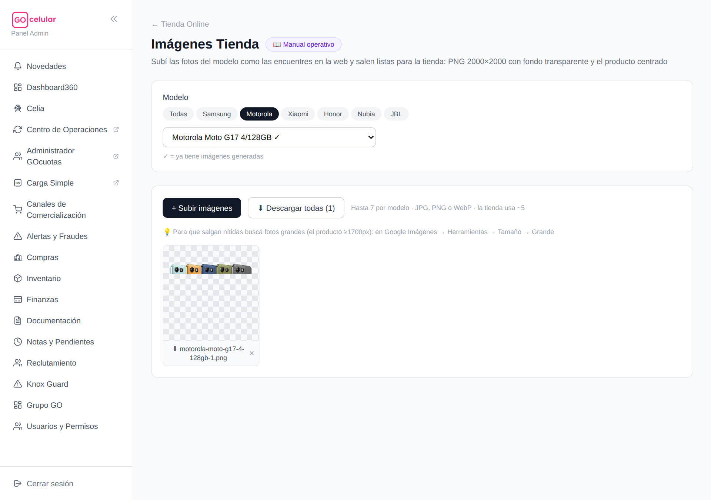
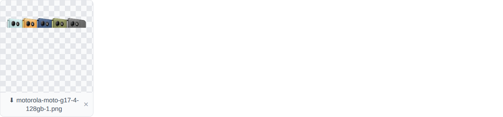

<title>Manual — Imágenes Tienda GOcelular</title>
<style>
  :root {
    --bg: #fcfcfa;
    --surface: #ffffff;
    --ink: #221e28;
    --muted: #6d6678;
    --line: #e9e4ee;
    --accent: #c21a5f;
    --accent-soft: #fdeef4;
    --bono: #6d28d9;
    --bono-soft: #f3eefe;
    --ok: #047857;
    --ok-soft: #ecfdf3;
    --warn: #b45309;
    --warn-soft: #fff7e8;
    --danger: #be123c;
    --danger-soft: #fef1f3;
    --chip: #f4f1f7;
  }
  @media (prefers-color-scheme: dark) {
    :root:not([data-theme="light"]) {
      --bg: #17141b; --surface: #201c26; --ink: #efeaf3; --muted: #a79fb3;
      --line: #352f3d; --accent: #f06ba3; --accent-soft: #3a1f2d;
      --bono: #b49afc; --bono-soft: #2c2440; --ok: #4ade80; --ok-soft: #16301f;
      --warn: #fbbf24; --warn-soft: #362a12; --danger: #fb7185; --danger-soft: #3b1c24;
      --chip: #2a2531;
    }
  }
  :root[data-theme="dark"] {
    --bg: #17141b; --surface: #201c26; --ink: #efeaf3; --muted: #a79fb3;
    --line: #352f3d; --accent: #f06ba3; --accent-soft: #3a1f2d;
    --bono: #b49afc; --bono-soft: #2c2440; --ok: #4ade80; --ok-soft: #16301f;
    --warn: #fbbf24; --warn-soft: #362a12; --danger: #fb7185; --danger-soft: #3b1c24;
    --chip: #2a2531;
  }
  * { box-sizing: border-box; }
  body {
    background: var(--bg); color: var(--ink);
    font: 16px/1.65 system-ui, -apple-system, "Segoe UI", Roboto, sans-serif;
    margin: 0; padding: 0 20px 80px;
  }
  main { max-width: 880px; margin: 0 auto; }
  h1, h2, h3 { line-height: 1.25; text-wrap: balance; }
  h1 { font-size: 2rem; margin: 40px 0 6px; }
  h2 { font-size: 1.45rem; margin: 56px 0 4px; padding-top: 16px; border-top: 3px solid var(--accent); }
  h3 { font-size: 1.05rem; margin: 26px 0 8px; }
  p { margin: 10px 0; }
  .sub { color: var(--muted); margin: 0 0 8px; }
  .meta { font-size: .8rem; color: var(--muted); }
  .eyebrow { text-transform: uppercase; letter-spacing: .09em; font-size: .72rem; font-weight: 700; color: var(--accent); }

  nav.toc { display: flex; flex-wrap: wrap; gap: 8px; margin: 22px 0 10px; position: sticky; top: 0; background: var(--bg); padding: 12px 0; z-index: 5; border-bottom: 1px solid var(--line); }
  nav.toc a { font-size: .82rem; font-weight: 600; color: var(--ink); text-decoration: none; background: var(--chip); border: 1px solid var(--line); border-radius: 999px; padding: 5px 12px; }
  nav.toc a:hover, nav.toc a:focus-visible { border-color: var(--accent); color: var(--accent); outline: none; }

  table { border-collapse: collapse; width: 100%; font-size: .9rem; }
  .tablewrap { overflow-x: auto; border: 1px solid var(--line); border-radius: 12px; background: var(--surface); margin: 14px 0; }
  th { text-align: left; font-size: .72rem; text-transform: uppercase; letter-spacing: .05em; color: var(--muted); padding: 10px 14px; border-bottom: 1px solid var(--line); }
  td { padding: 9px 14px; border-bottom: 1px solid var(--line); vertical-align: top; }
  tr:last-child td { border-bottom: none; }
  td.num, .num { font-variant-numeric: tabular-nums; }

  ol.pasos { counter-reset: paso; list-style: none; padding: 0; margin: 14px 0; display: grid; gap: 10px; }
  ol.pasos li { counter-increment: paso; background: var(--surface); border: 1px solid var(--line); border-radius: 12px; padding: 12px 16px 12px 54px; position: relative; }
  ol.pasos li::before {
    content: counter(paso); position: absolute; left: 14px; top: 12px;
    width: 28px; height: 28px; border-radius: 999px; background: var(--accent); color: #fff;
    display: grid; place-items: center; font-weight: 800; font-size: .9rem;
  }
  .callout { border-radius: 12px; padding: 12px 16px; margin: 14px 0; border: 1px solid; font-size: .93rem; }
  .callout.oro { background: var(--warn-soft); border-color: var(--warn); }
  .callout.tip { background: var(--ok-soft); border-color: var(--ok); }
  .callout.ojo { background: var(--danger-soft); border-color: var(--danger); }
  .callout.bono { background: var(--bono-soft); border-color: var(--bono); }
  .callout b:first-child { display: block; margin-bottom: 2px; }

  figure { margin: 18px 0; }
  figure .frame { max-height: 540px; overflow-y: auto; border: 1px solid var(--line); border-radius: 12px; background: var(--surface); }
  figure img { display: block; width: 100%; height: auto; }
  figcaption { font-size: .8rem; color: var(--muted); margin-top: 6px; }

  code, .formula { font-family: ui-monospace, "Cascadia Code", Menlo, monospace; font-size: .88em; background: var(--chip); border-radius: 6px; padding: 1px 6px; }
  .formula { display: block; padding: 14px 18px; font-size: 1rem; margin: 14px 0; border: 1px solid var(--line); overflow-x: auto; white-space: nowrap; }
  .pill { display: inline-block; font-size: .76rem; font-weight: 700; border-radius: 999px; padding: 2px 10px; }
  .pill.vig { background: var(--ok-soft); color: var(--ok); }
  .pill.ven { background: var(--chip); color: var(--muted); }
  .pill.rojo { background: var(--danger-soft); color: var(--danger); }
  .pill.violeta { background: var(--bono-soft); color: var(--bono); }
  .pill.ambar { background: var(--warn-soft); color: var(--warn); }
</style>


<main>
  <p class="eyebrow">GOcelular360 · Manual operativo</p>
  <h1>🖼 Imágenes Tienda — cómo buscar, generar y subir las fotos</h1>
  <p class="sub">Todo lo que hace falta para cargar las imágenes de un modelo nuevo en la tienda GOcelular usando la página <b>Canales → Tienda Online → Imágenes Tienda</b>: dónde buscar las fotos, cómo guardarlas BIEN (el paso donde más se falla) y cómo generarlas y subirlas. Con capturas reales.</p>
  <p class="meta">Actualizado el 26/10/2026 · Las capturas son de producción.</p>

  <nav class="toc">
    <a href="#mapa">🧭 El mapa</a>
    <a href="#buscar">🔍 Buscar la foto</a>
    <a href="#guardar">💾 Guardarla bien</a>
    <a href="#generar">⚙️ Generar</a>
    <a href="#subir">⬇ Descargar y subir</a>
    <a href="#oro">⭐ Reglas de oro</a>
  </nav>

  <h2 id="mapa">🧭 El mapa en 30 segundos</h2>
  <p>La tienda muestra todos los productos con el mismo formato de imagen: <b>cuadrada de 2000×2000, fondo transparente, producto centrado</b>. Conseguir eso a mano es un trabajo de diseño — esta página lo hace sola. Tu parte es <b>conseguir una buena foto</b>; la página hace el resto.</p>
  <div class="tablewrap"><table>
    <tr><th>Paso</th><th>Quién lo hace</th><th>Dónde</th></tr>
    <tr><td>1. Buscar la foto del modelo en la web</td><td>Vos</td><td>Web del fabricante, otras tiendas o Google Imágenes</td></tr>
    <tr><td>2. Quitar el fondo, recortar, centrar y llevar a 2000×2000</td><td>La página, sola</td><td>Imágenes Tienda (al subir la foto)</td></tr>
    <tr><td>3. Revisar que haya quedado bien y descargar</td><td>Vos</td><td>Imágenes Tienda (vista previa + Descargar todas)</td></tr>
    <tr><td>4. Subir los PNG a la tienda</td><td>Vos</td><td>El administrador de la tienda, como siempre</td></tr>
  </table></div>

  <figure>
    <div class="frame"></div>
    <figcaption>📸 captura real — la página al entrar: píldoras para filtrar por marca y desplegable de modelos. El ✓ marca los modelos que ya tienen imágenes generadas.</figcaption>
  </figure>

  <h2 id="buscar">🔍 Dónde buscar la foto (en este orden)</h2>
  <ol class="pasos">
    <li><b>La web del fabricante</b> — <code>samsung.com/ar</code>, <code>motorola.com.ar</code>, <code>mi.com</code>, <code>honor.com</code>. Sus fotos de producto son siempre de 2000px o más: <b>pasan limpias el 100% de las veces</b>. Entrá a la página del modelo y guardá la foto principal.</li>
    <li><b>Otras tiendas grandes</b> (Riiing, Tecnocompro, etc.) — usan los mismos renders oficiales, en general de 1000 a 1500px: casi siempre sirven. <b>Truco Riiing:</b> si el archivo guardado termina en <code>-300x300.jpg</code>, es una versión achicada — borrale ese pedazo a la dirección en la barra del navegador y bajás el original.</li>
    <li><b>Google Imágenes</b> como último recurso — buscá <code>&lt;marca&gt; &lt;modelo&gt; render png</code> (ej.: <code>motorola moto g17 render png</code>) y activá <b>Herramientas → Tamaño → Grande</b>. La palabra <b>render</b> trae las fotos oficiales de prensa en vez de fotos de usuarios.</li>
  </ol>
  <div class="callout tip"><b>💡 Variantes de búsqueda útiles</b>Si no aparece lo que buscás: <code>&lt;modelo&gt; press render</code>, <code>&lt;modelo&gt; png transparent</code> (vienen ya sin fondo), o agregá el color: <code>moto g17 gris render png</code>.</div>
  <div class="callout ojo"><b>⚠ Ojo con las marcas de agua</b>Si la foto tiene el logo de otra tienda o una marca de agua encima del producto, descartala: eso queda estampado en nuestra tienda. MercadoLibre y tiendas chicas son los casos típicos.</div>

  <h2 id="guardar">💾 Cómo guardarla BIEN (acá se falla casi siempre)</h2>
  <p>El filtro "Grande" de Google filtra qué resultados muestra, pero <b>la grilla de resultados sigue siendo de miniaturas de ~300px</b>. Si guardás desde la grilla, bajás la miniatura aunque la original sea gigante — y la página la va a rechazar por chica.</p>
  <ol class="pasos">
    <li><b>Clic en el resultado</b> para abrirlo en el panel grande de la derecha.</li>
    <li><b>Esperá un segundo</b> a que la imagen cargue nítida (primero aparece borrosa y enseguida la reemplaza la buena).</li>
    <li>Recién ahí: <b>botón derecho → Guardar imagen</b>.</li>
  </ol>
  <div class="callout oro"><b>⭐ El chequeo de los 5 segundos</b>Mirá el peso del archivo descargado: si pesa <b>20–50 KB es una miniatura</b> y no va a servir; una foto de producto real pesa <b>200 KB o más</b>.</div>

  <h2 id="generar">⚙️ Generar las imágenes</h2>
  <ol class="pasos">
    <li>Entrá a <b>Canales → Tienda Online → Imágenes Tienda</b>.</li>
    <li>Filtrá con las <b>píldoras de marca</b> y elegí el modelo en el desplegable. El ✓ indica que ya tiene imágenes generadas.</li>
    <li>Tocá <b>+ Subir imágenes</b> y elegí las fotos que bajaste (podés seleccionar varias juntas; JPG, PNG o WebP; hasta 7 por modelo — la tienda usa unas 5).</li>
    <li>Esperá el procesado: cada foto aparece en la grilla <b>sobre fondo cuadriculado</b> (el cuadriculado ES la transparencia: no va a verse en la tienda).</li>
    <li><b>Revisá cada una</b>: producto entero, sin pedazos de fondo pegados, sin cortes raros. La que salió mal se borra con la <b>✕</b> (pide confirmar) y probás con otra foto de la web.</li>
  </ol>
  <figure>
    <div class="frame"></div>
    <figcaption>📸 captura real — Motorola filtrado, Moto G17 elegido y una imagen ya generada sobre el cuadriculado, con su botón de descarga y la ✕ para borrarla.</figcaption>
  </figure>
  <h3>Los dos mensajes que puede dar al subir</h3>
  <div class="tablewrap"><table>
    <tr><th>Mensaje</th><th>Qué significa</th><th>Qué hacer</th></tr>
    <tr><td><span class="pill ambar">⚠ ámbar</span> "la foto original es chica"</td><td>Se procesó, pero la foto venía justa de tamaño y puede verse algo borrosa.</td><td>Mirala bien en la vista previa; si no convence, ✕ y buscá una más grande.</td></tr>
    <tr><td><span class="pill rojo">✗ rojo</span> "demasiado chica"</td><td>No se procesó. El propio mensaje te dice la causa: guardaste una miniatura, o el producto ocupa una esquinita de la imagen.</td><td>Volvé a <a href="#guardar">💾 Guardarla bien</a> y bajá la versión grande. No insistas con la misma foto.</td></tr>
  </table></div>

  <h2 id="subir">⬇ Descargar y subir a la tienda</h2>
  <ol class="pasos">
    <li>Con las imágenes buenas en la grilla, tocá <b>⬇ Descargar todas</b>: caen en tu carpeta Descargas como archivos PNG sueltos, ya con el nombre final (<code>motorola-moto-g17-4-128gb-1.png</code>, <code>-2.png</code>…).</li>
    <li>La primera vez Chrome pregunta si permitís que el sitio <b>descargue varios archivos</b> — aceptá una sola vez y queda.</li>
    <li>Andá al administrador de la tienda y subí esos PNG al producto, como siempre. <b>Se suben los archivos sueltos</b>, tal cual bajaron.</li>
  </ol>
  <figure>
    <div class="frame"></div>
    <figcaption>📸 captura real — cada tarjeta tiene su botón de descarga individual con el nombre final del archivo.</figcaption>
  </figure>
  <div class="callout tip"><b>💡 Quedan guardadas</b>Las imágenes generadas quedan en la página: si cerrás y volvés mañana, elegís el modelo y están ahí para descargar de nuevo.</div>

  <h2 id="oro">⭐ Reglas de oro (resumen para la heladera)</h2>
  <ol class="pasos">
    <li><b>Primero el fabricante, después otras tiendas, Google al final.</b> La foto de la web oficial pasa limpia siempre.</li>
    <li><b>Nunca guardes desde la grilla de Google.</b> Clic → panel grande → esperar que cargue nítida → recién ahí guardar.</li>
    <li><b>20–50 KB = miniatura.</b> Una foto real pesa 200 KB o más.</li>
    <li><b>El aviso ámbar es un "mirala dos veces".</b> Si dudás, mejor otra foto.</li>
    <li><b>El rechazo rojo no se discute:</b> la foto no da — buscá una más grande, no la vuelvas a subir.</li>
    <li><b>Logo de otra tienda o marca de agua = descartada</b>, aunque sea grande.</li>
    <li><b>La tienda usa ~5 imágenes por modelo</b> y se suben como PNG sueltos, nunca comprimidos.</li>
  </ol>
</main>
